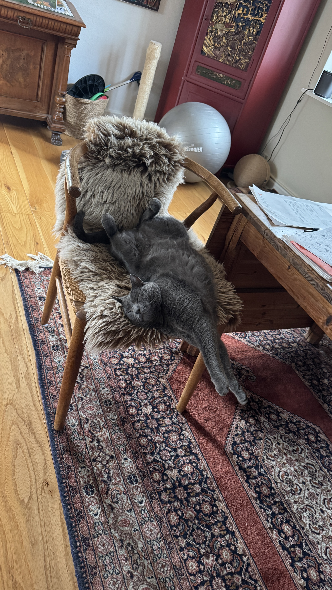

\ Mit yndlingsk\'e6ledyr er en kat. Katte er rolige, nysgerrige og har meget\ personlighed. De kan b\'e5de v\'e6re selvst\'e6ndige og k\'e6rlige.\

\ L\'e6s mere om katte her:\ \ Den Danske Dyrl\'e6geforening\ \